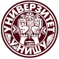

Consortium
Six higher education institutions from six countries.
University of Maribor
Faculty of Electrical Engineering and Computer Science, Laboratory for Signal Processing and Remote Control. Maribor, Slovenia.
Coordinates the project and is responsible for project and financial management. Works with TalTech on the AI system and data classification, and on control and embedded systems.
Slovak University of Technology in Bratislava
Faculty of Electrical Engineering and Information Technology, Institute of Automotive Mechatronics. Bratislava, Slovakia.
Leads the work on the exercise framework and hardware, and the combined promotional event. Works in control theory, online experiments and virtual and remote laboratories.
College of Polytechnics Jihlava
Department of Technical Studies. Jihlava, Czechia.
Leads implementation, validation and testing, and hosts the joint international event. Teaches dynamic systems, automatic control and simulation.
Tallinn University of Technology
Department of Mechanical and Industrial Engineering. Tallinn, Estonia.
Leads the development of the AI recommendation system and hosts the web application. Works in robotics, smart industry and machine learning.
Ss. Cyril and Methodius University in Skopje
Faculty of Electrical Engineering and Information Technologies. Skopje, North Macedonia.
Works in virtual instrumentation, sensors and data acquisition. Develops the project website and promotional materials, and works with the University of Niš on measurement exercises.

University of Niš
Faculty of Electronic Engineering, Department of Measurements. Niš, Serbia.
Leads dissemination and training events, and organises the special session at the SAUM conference. Works in measurement systems, position sensors and smart sensors.
Management Board
The Management Board has one member from each partner institution.
| Institution | Member | Role |
|---|---|---|
| University of Maribor, FERI | Andrej Sarjaš | Chair |
| Slovak University of Technology in Bratislava | Pavol Bisták | Member |
| College of Polytechnics Jihlava | Libor Pekař | Member |
| Tallinn University of Technology | Kristo Karjust | Member |
| Ss. Cyril and Methodius University in Skopje | Živko Kokolanski | Member |
| University of Niš | Milan Dinčić | Member |
Project coordinator
University of Maribor, Faculty of Electrical Engineering and Computer Science (UM FERI), Slovenia.
Management Board chair: Andrej Sarjaš.
www.um.si